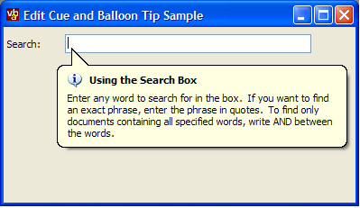

XP TextBox Balloon Tips (13K)
XP TextBox Balloon Tips (13K)
 26 Jun 2003
26 Jun 2003
Manifest was missing from download.
 Subclassing Without The Crashes
Subclassing Without The Crashes

Text Box Balloon tip support in XP
This tip demonstrates how to to use the new Balloon Tip support provided for TextBoxes under XP. Cue Banners may also work, but only if you don't have multiple language support installed.
Under XP, TextBoxes now support Balloon Tip notifications and allegedly provide support for a "Cue Banner" (basically a piece of grayed instructional text such as "Type Your Query Here" which disappears when the user clicks on it. However, I was unable to get the latter to go, I am told this occurs if you have multiple languages installed on your XP system. Balloon tips work fine though!
To use this sample you must be linked to ComCtl32.DLL version 6.0 or above. See the articles Making VB Apply XP Visual Styles at Design and Debug Time and Adding XP Visual Styles to your Visual Basic Application for more details on how to do this. The sample code uses a manifest file to achieve this.
The cTextBoxXP class provided with the download provides a simple wrapper around the new functionality. Once you assign a TextBox to the class, You can set the BalloonTipIcon, BalloonTipText and BalloonTipTitle properties and then show and hide the balloon tip using ShowBalloonTip and HideBalloonTip.
Since the new functions are only available in Unicode, the conversion to VB has to use pointers for each of the string parameters. Luckily in this case VB's StrPtr function makes it easy. Basic code to display a BalloonTip is as follows:
Private Type EDITBALLOONTIP
cbStruct As Long
pszTitle As Long
pszText As Long
ttiIcon As Long
End Type
Private Const ECM_FIRST = &H1500
Private Const EM_SHOWBALLOONTIP = (ECM_FIRST + 3)
Private Const EM_HIDEBALLOONTIP = (ECM_FIRST + 4)
Private Declare Function SendMessageLongW Lib "user32" _
Alias "SendMessageW" ( _
ByVal hWnd As Long, _
ByVal wMsg As Long, _
ByVal wParam As Long, _
ByVal lParam As Long) As Long
Private Declare Function SendMessageW Lib "user32" ( _
ByVal hWnd As Long, _
ByVal wMsg As Long, _
ByVal wParam As Long, _
lParam As Any) As Long
Public Enum BalloonTipIconConstants
TTI_NONE = 0
TTI_INFO = 1
TTI_WARNING = 2
TTI_ERROR = 3
End Enum
Public Sub ShowBalloonTip()
Dim lR As Long
Dim tEBT As EDITBALLOONTIP
tEBT.cbStruct = LenB(tEBT)
tEBT.pszText = StrPtr(m_sText) ' Text to show
tEBT.pszTitle = StrPtr(m_sTitle) ' Title to show
tEBT.ttiIcon = m_eIcon ' One of the balloon tip icons
lR = SendMessageW(m_hWnd, EM_SHOWBALLOONTIP, 0, tEBT)
End Sub
Public Sub HideBalloonTip()
Dim lR As Long
lR = SendMessageLongW(m_hWnd, EM_HIDEBALLOONTIP, 0, 0)
End Sub